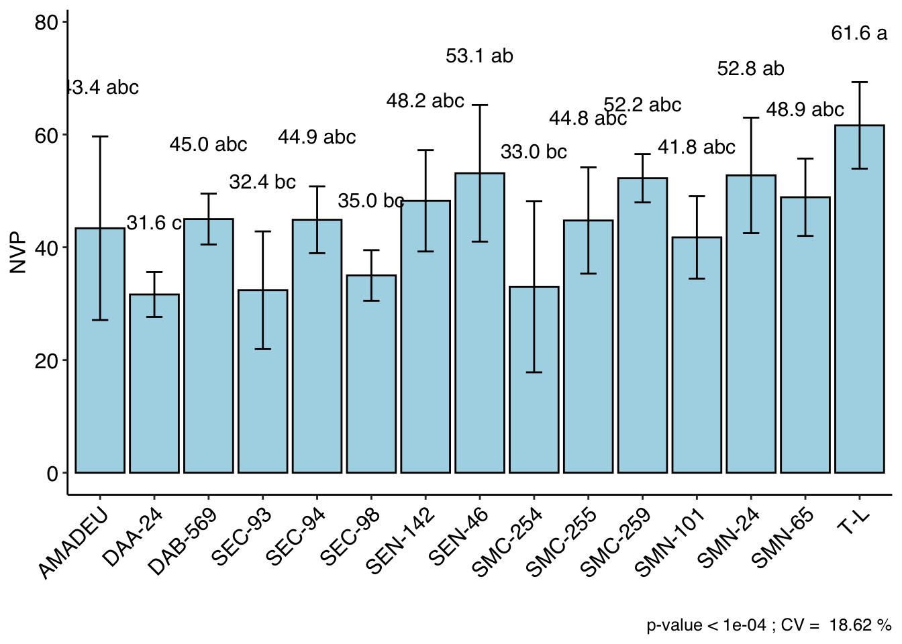

library(tidyverse)
library(metan)
library(readxl)
library(kableExtra)Anexo: Primer trabajo práctico - Diseños Experimentales
Franklin Santos ![]()
ANEXOS
Análisis de base de datos
db <- read_excel("data_frijol.xlsx")
head(db)# A tibble: 6 × 5
LINEAS BLQ APL NVP RDTO_P
<chr> <dbl> <dbl> <dbl> <dbl>
1 AMADEU 1 44.3 28 24.9
2 AMADEU 2 35.2 43 25.4
3 AMADEU 3 44.8 36.5 37.1
4 AMADEU 4 44 66 55.4
5 DAA-24 1 46 33 46.3
6 DAA-24 2 51.6 26.5 50.2## Analisis descriptivo
db%>%
select(-LINEAS, -BLQ)%>%
desc_stat(stats = c("mean, se, kurt, skew, min, max"))%>%
round_cols()%>%
kbl(caption = "Análisis descriptivo")%>%
kable_classic(full_width = F, html_font = "Cambria")| variable | mean | se | kurt | skew | min | max |
|---|---|---|---|---|---|---|
| APL | 54.68 | 1.39 | -0.77 | 0.45 | 35.15 | 78.05 |
| NVP | 44.58 | 1.52 | 0.03 | -0.05 | 13.00 | 70.00 |
| RDTO_P | 44.97 | 2.12 | -0.43 | -0.28 | 6.15 | 76.20 |
## Boxplot
ap = ggplot(data = db,
aes(x=LINEAS,
y=APL,
color=LINEAS)) +
geom_boxplot() +
geom_jitter() +
stat_summary(fun = "mean", geom = "point", color = "black") +
theme_classic() +
labs(x="Genotipos de frijol",
y="Altura de planta (cm)") +
guides(x=guide_axis(angle = 45))+
theme(legend.position = "none")
nvp = ggplot(data = db,
aes(x=LINEAS,
y=NVP,
color=LINEAS)) +
geom_boxplot() +
geom_jitter() +
stat_summary(fun = "mean", geom = "point", color = "black") +
theme_classic() +
labs(x="Genotipos de frijol",
y="Numero de vainas por planta") +
guides(x=guide_axis(angle = 45))+
theme(legend.position = "none")
RDTO = ggplot(data = db,
aes(x=LINEAS,
y=RDTO_P,
color=LINEAS)) +
geom_boxplot() +
geom_jitter() +
stat_summary(fun = "mean", geom = "point", color = "black") +
theme_classic() +
labs(x="Genotipos de frijol",
y="Rendimiento por planta (g)") +
guides(x=guide_axis(angle = 45))+
theme(legend.position = "none")Analisis de Varianza y supuestos de normalidad
library(AgroR)
attach(db)
a=DBC(trat=LINEAS,
block=BLQ,
response=APL,
ylab = "APL",
angle = 45)#Tukey
-----------------------------------------------------------------
Normality of errors
-----------------------------------------------------------------
Method Statistic p.value
Shapiro-Wilk normality test(W) 0.9867105 0.7583378
-----------------------------------------------------------------
Homogeneity of Variances
-----------------------------------------------------------------
Method Statistic p.value
Bartlett test(Bartlett's K-squared) 16.36628 0.2915212
-----------------------------------------------------------------
Independence from errors
-----------------------------------------------------------------
Method Statistic p.value
Durbin-Watson test(DW) 2.217491 0.1603747
-----------------------------------------------------------------
Additional Information
-----------------------------------------------------------------
CV (%) = 13.68
MStrat/MST = 0.69
Mean = 54.6775
Median = 52.575
Possible outliers = No discrepant point
-----------------------------------------------------------------
Analysis of Variance
-----------------------------------------------------------------
Df Sum Sq Mean.Sq F value Pr(F)
Treatment 14 4224.0315 301.7165 5.394596 1.008028e-05
Block 3 230.7708 76.9236 1.375370 2.634329e-01
Residuals 42 2349.0348 55.9294
-----------------------------------------------------------------
Multiple Comparison Test: Tukey HSD
-----------------------------------------------------------------
resp groups
SMN-24 71.5250 a
SMC-259 68.4125 ab
SEC-93 61.7000 abc
SEC-98 61.6250 abc
SEN-46 59.3375 abcd
T-L 57.6750 abcd
SMC-254 56.8500 abcd
SEC-94 52.0375 bcd
SEN-142 51.9000 bcd
DAA-24 48.4625 cd
SMN-65 48.4000 cd
SMC-255 48.2500 cd
SMN-101 47.6125 cd
DAB-569 44.3125 cd
AMADEU 42.0625 db=DBC(trat=LINEAS,
block=BLQ,
response=NVP,
ylab = "NVP",
angle = 45)
-----------------------------------------------------------------
Normality of errors
-----------------------------------------------------------------
Method Statistic p.value
Shapiro-Wilk normality test(W) 0.970281 0.1506192
-----------------------------------------------------------------
Homogeneity of Variances
-----------------------------------------------------------------
Method Statistic p.value
Bartlett test(Bartlett's K-squared) 21.9687 0.07925985
-----------------------------------------------------------------
Independence from errors
-----------------------------------------------------------------
Method Statistic p.value
Durbin-Watson test(DW) 2.778338 0.9147993
-----------------------------------------------------------------
Additional Information
-----------------------------------------------------------------
CV (%) = 18.62
MStrat/MST = 0.43
Mean = 44.575
Median = 45.75
Possible outliers = No discrepant point
-----------------------------------------------------------------
Analysis of Variance
-----------------------------------------------------------------
Df Sum Sq Mean.Sq F value Pr(F)
Treatment 14 4293.8500 306.70357 4.454278 8.179603e-05
Block 3 995.1125 331.70417 4.817364 5.683248e-03
Residuals 42 2891.9500 68.85595
-----------------------------------------------------------------
Multiple Comparison Test: Tukey HSD
-----------------------------------------------------------------
resp groups
T-L 61.625 a
SEN-46 53.125 ab
SMN-24 52.750 ab
SMC-259 52.250 abc
SMN-65 48.875 abc
SEN-142 48.250 abc
DAB-569 45.000 abc
SEC-94 44.875 abc
SMC-255 44.750 abc
AMADEU 43.375 abc
SMN-101 41.750 abc
SEC-98 35.000 bc
SMC-254 33.000 bc
SEC-93 32.375 bc
DAA-24 31.625 c
c=DBC(trat=LINEAS,
block=BLQ,
response=RDTO_P,
ylab = "RDTO_P",
angle = 45)
-----------------------------------------------------------------
Normality of errors
-----------------------------------------------------------------
Method Statistic p.value
Shapiro-Wilk normality test(W) 0.987436 0.79445
-----------------------------------------------------------------
Homogeneity of Variances
-----------------------------------------------------------------
Method Statistic p.value
Bartlett test(Bartlett's K-squared) 11.65852 0.6337047
-----------------------------------------------------------------
Independence from errors
-----------------------------------------------------------------
Method Statistic p.value
Durbin-Watson test(DW) 2.298845 0.253345
-----------------------------------------------------------------
Additional Information
-----------------------------------------------------------------
CV (%) = 26.23
MStrat/MST = 0.63
Mean = 44.965
Median = 45.75
Possible outliers = No discrepant point
-----------------------------------------------------------------
Analysis of Variance
-----------------------------------------------------------------
Df Sum Sq Mean.Sq F value Pr(F)
Treatment 14 9365.5715 668.9694 4.809799 3.630627e-05
Block 3 766.8182 255.6061 1.837773 1.549949e-01
Residuals 42 5841.5568 139.0847
-----------------------------------------------------------------
Multiple Comparison Test: Tukey HSD
-----------------------------------------------------------------
resp groups
SEN-142 60.3750 a
T-L 59.0625 a
SMN-24 54.7125 a
SMN-65 52.9500 a
SMN-101 52.7875 a
SMC-259 52.2125 a
DAB-569 51.8125 a
SEN-46 50.9250 ab
DAA-24 49.7375 ab
SMC-255 40.3500 abc
SEC-94 40.1750 abc
AMADEU 35.7000 abc
SEC-98 34.3750 abc
SMC-254 20.9875 bc
SEC-93 18.3125 clibrary(knitr)
kable(summarise_anova(list(a,b,c), design = "DBC", divisor = FALSE))| APL | NVP | RDTO_P | |
|---|---|---|---|
| AMADEU | 42.062 d | 43.375 abc | 35.7 abc |
| DAA-24 | 48.462 cd | 31.625 c | 49.737 ab |
| DAB-569 | 44.312 cd | 45 abc | 51.812 a |
| SEC-93 | 61.7 abc | 32.375 bc | 18.312 c |
| SEC-94 | 52.038 bcd | 44.875 abc | 40.175 abc |
| SEC-98 | 61.625 abc | 35 bc | 34.375 abc |
| SEN-142 | 51.9 bcd | 48.25 abc | 60.375 a |
| SEN-46 | 59.337 abcd | 53.125 ab | 50.925 ab |
| SMC-254 | 56.85 abcd | 33 bc | 20.988 bc |
| SMC-255 | 48.25 cd | 44.75 abc | 40.35 abc |
| SMC-259 | 68.412 ab | 52.25 abc | 52.212 a |
| SMN-101 | 47.612 cd | 41.75 abc | 52.788 a |
| SMN-24 | 71.525 a | 52.75 ab | 54.712 a |
| SMN-65 | 48.4 cd | 48.875 abc | 52.95 a |
| T-L | 57.675 abcd | 61.625 a | 59.062 a |
| CV(%) | 13.678 | 18.616 | 26.228 |
| p_tr | p<0.001 | p<0.001 | p<0.001 |
| p_bl | 0.263 | 0.006 | 0.155 |
| Transformation | No transf | No transf | No transf |
| p-value Normality of errors | 0.758 | 0.151 | 0.794 |
| p-value Homogeneity of variances | 0.292 | 0.079 | 0.634 |
Segunda base de datos (DCA)
Diseño completamente al azar
library(AgroR)
data("bean")
head(bean) trat prod
1 T1 100
2 T1 120
3 T1 110
4 T1 90
5 T1 100
6 T2 150with(bean, DIC(trat, prod, ylab = "Produccion (g planta)")) # tukey
-----------------------------------------------------------------
Normality of errors
-----------------------------------------------------------------
Method Statistic p.value
Shapiro-Wilk normality test(W) 0.9688448 0.6159275
-----------------------------------------------------------------
Homogeneity of Variances
-----------------------------------------------------------------
Method Statistic p.value
Bartlett test(Bartlett's K-squared) 2.64645 0.6186172
-----------------------------------------------------------------
Independence from errors
-----------------------------------------------------------------
Method Statistic p.value
Durbin-Watson test(DW) 1.971378 0.1719516
-----------------------------------------------------------------
Additional Information
-----------------------------------------------------------------
CV (%) = 4.55
MStrat/MST = 1
Mean = 173.24
Median = 150
Possible outliers = No discrepant point
-----------------------------------------------------------------
Analysis of Variance
-----------------------------------------------------------------
Df Sum Sq Mean.Sq F value Pr(F)
Treatment 4 72712.16 18178.04 292.6278 1.939428e-17
Residuals 20 1242.40 62.12
-----------------------------------------------------------------
Multiple Comparison Test: Tukey HSD
-----------------------------------------------------------------
resp groups
T5 255.6 a
T4 212.4 b
T2 152.8 c
T3 141.4 c
T1 104.0 d